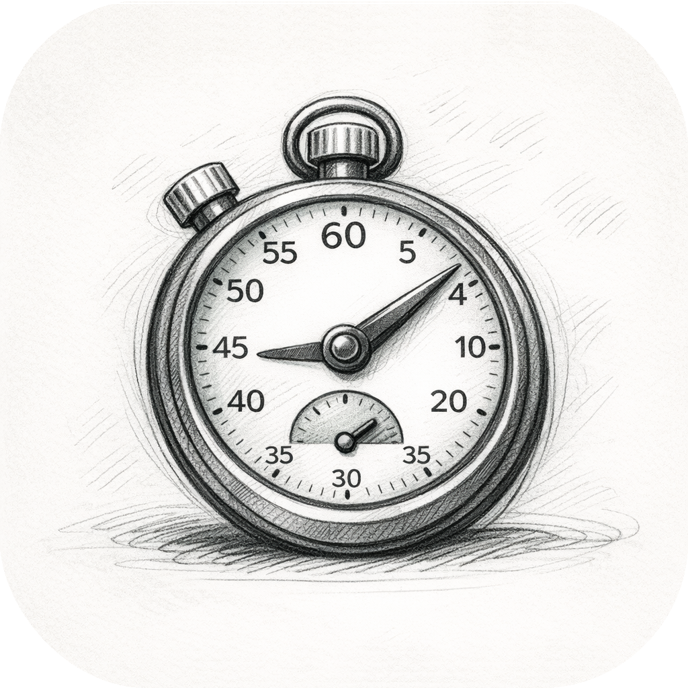

使用手册
| 应用名称 | Good Timer |
|---|---|
| 版本 | 1.0.0 |
| 开发 | Willee Project |
| 支持平台 | Android, Windows |
Good Timer 是一款适用于日常生活的通用计时器应用。提供可自由配置的间隔计时器和支持分段记录的秒表，适用于学习、运动、烹饪、冥想等各种活动。
通过底部（竖屏）或左侧（横屏）的标签页切换界面。
| 计时器 | 间隔计时器 |
|---|---|
| 秒表 | 秒表和分段记录 |
| 记录 | 使用记录和统计 |
| 设置 | 应用设置 |
计时器由阶段和轮次组成。
示例: 专注（25分钟）→ 休息（5分钟），重复4轮
计时器界面由两个标签组成。
计时器标签
设置标签
| 待机 | 开始 |
|---|---|
| 运行中 | 暂停 |
| 已暂停 | 继续、停止 |
| 已停止 | 重置、开始 |
| 已完成 | 重置、开始 |
预设是保存的计时器配置（阶段+轮次），方便快速使用。
首次启动时自动创建以下预设：
为秒表会话分配标签进行分类管理。
秒表界面的第二个标签页可以快速查看今天记录的会话。
在记录标签中查看计时器和秒表的使用记录。
通过 Google Drive 备份和同步数据。
登录前：
登录后：
通过应用内购买支持开发者。购买后将移除广告。
Windows 平台不支持应用内购买。
| 功能 | Android | Windows |
|---|---|---|
| 广告 | 有（支持后移除） | 即将推出 |
| 应用内购买 | 支持 | 即将推出 |
| 云同步 | 支持 | 即将推出 |
查看 Good Timer 隐私政策。